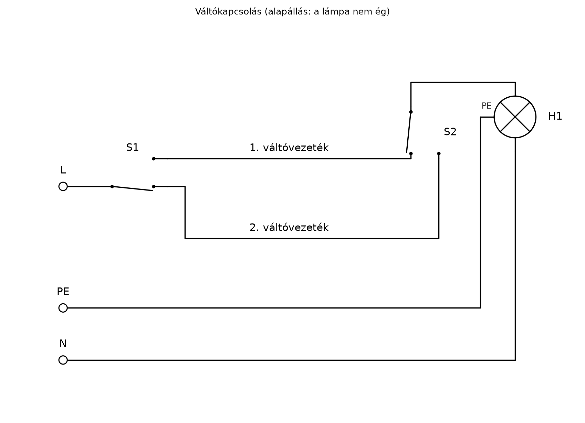

Statikus változat (mint a PDF-ben)
Egy lakásfelújítás során minden olyan helyiségben, ahol a belépőnek meg kell tudni gyújtania a villanyt, világítási áramkört kell építeni. Az egyik legegyszerűbb feladat egy szoba mennyezeti lámpája egyetlen ajtó melletti kapcsolóval. A következő szint már a hálószoba, ahol az ágyból és az ajtóból is szeretnénk kapcsolni, vagy éppen egy lépcsőház, ahol három emeletről is lehessen irányítani ugyanazt a lámpát. Ugyanazt a fizikai elvet használjuk, de a kapcsolók típusa és a bekötésük egészen más.
Ha a szerelő nem érti ezeket a kapcsolásokat, az alábbi hibák jellemzően előfordulnak:
Ebben az alfejezetben a négy leggyakoribb világítási kapcsolást tanulod meg: az egypólusú, a soros (csillár), a váltó- és a keresztkapcsolást. A hangsúly a kapcsolási rajz, a huzalozási terv és a tipikus hibák felismerésén van.

A rajzon a felső vízszintes vonal a fázisvezető (L), az alsó a nullavezető (N). Az S1 jelű kapcsoló a fázisban van, utána jön a H1 lámpa, amely a nulla felé vezeti az áramot. A védővezető (PE) a lámpatest fém részéhez kötendő, a kapcsolóhoz általában nem megy.
Definíció. Egypólusú (sarkos) kapcsolás: egyetlen kapcsolóval egyetlen fogyasztói áramkört szakítunk meg, mégpedig kizárólag a fázisvezetőben. A nullavezetőt ilyenkor nem szakítjuk meg.
A kétpólusú kapcsolás a fázist és a nullát is megszakítja, de lakossági világítási áramkörökben ritkábban, inkább csak különleges helyeken (pl. kültéri, karbantartást igénylő berendezések) fordul elő. A gyakorlatban a világítási áramkörök kapcsolói egypólusúak.
Szabály. Világítási áramkörben a kapcsoló mindig a fázisvezetőt szakítsa meg, soha ne a nullavezetőt. Ennek oka: kikapcsolt állapotban a lámpa foglalata, a lámpatest és a csatlakozó vezeték ne legyen feszültség alatt.
Definíció. Soros (csillár) kapcsolás: egy közös lámpatestben (pl. csillárban) két vagy több fényforráscsoportot külön-külön kapcsolhatunk. A kapcsoló általában kétsoros, tehát két egypólusú kapcsoló van egymás mellett, és a két kapcsolt fázis külön-külön táplálja a csoportokat. A csillár izzóinak közös pontja a nulla.
Definíció. Váltókapcsolás: két helyről történő kapcsolás két váltókapcsolóval. A váltókapcsolónak három kivezetése van: egy közös bemenet és két váltóérintkező. A két kapcsoló közös pontjait a fázis, illetve a lámpa felé kötjük, a váltóérintkezőket pedig páronként összekötjük. A lámpa a kapcsolóállások két kombinációjánál ég (a bekötéstől függ, hogy az azonos vagy az ellentétes állásoknál); bármelyik kapcsoló átváltása megfordítja a lámpa állapotát.
Definíció. Keresztkapcsolás: három vagy több helyről történő kapcsolás. Két szélső váltókapcsoló közé tetszőleges számú keresztváltó kapcsolót (röviden keresztkapcsolót) teszünk. A keresztkapcsolónak négy kivezetése van: két bemenet és két kimenet. A belső érintkezők úgy vannak kialakítva, hogy az egyik állásban a bemenő párokat egyenesen, a másik állásban keresztben kötik össze. Ezáltal eggyel több helyről is felváltható a lámpa állapota.
Megjegyzés a rajzjelekről. A kapcsolási rajzon az egypólusú kapcsolót általában nyitott érintkezővel jelöljük. A váltókapcsolót két érintkező (nyitott és zárt) együttest ábrázoló rajzjellel, közös mozgó érintkezővel. A keresztkapcsolót négy kivezetéssel és a keresztező belső összekötéssel jelöljük. Az MSZ EN 60617 jelrendszerben ezek a szimbólumok egyértelműek.
A kapcsolási rajzból a huzalozási terv úgy készül, hogy meghatározzuk, melyik kötődobozba hány vezeték érkezik, és az egyes vezetékek milyen szerepet kapnak. A lakossági gyakorlatban a színek:
Példa egypólusú kapcsolásra. A kapcsolóhoz a kötődobozból bemegy egy barna fázisvezető, és kijön belőle egy fekete kapcsolt fázis. A lámpához a dobozból megy a fekete kapcsolt fázis, a kék nulla és a zöld-sárga védő. A kötődobozban tehát 8 vezetékvég csatlakozik: bejövő L, N, PE; a kapcsolóhoz menő barna és a visszajövő fekete; a lámpához menő fekete, kék és zöld-sárga.
Adott: egy lakáselosztóból jön L, N, PE. Egy mennyezeti lámpát akarunk egy kapcsolóval működtetni. A kapcsoló a szobaajtó mellett, a lámpa a mennyezeten.
Keresett: a bekötési sorrend és a szükséges vezetékek.
Megoldás: 1. Az elosztóból a kötődobozba behúzzuk a tápvezetéket: L (barna), N (kék), PE (zöld-sárga). 2. A kötődobozból két vezetéket viszünk a kapcsolóhoz: egy barna (állandó fázis) és egy fekete (kapcsolt fázis visszajövő). 3. A kapcsoló két kapcsára kötjük a barna és a fekete vezetéket; melyik melyikre, mindegy, mert csak szakít. 4. A kötődobozból a lámpához megy a fekete (kapcsolt fázis), a kék (nulla) és a zöld-sárga (PE). 5. A kötődobozban a bejövő barna és a kapcsolóhoz menő barna össze van kötve; a lámpa fekete vezetéke a kapcsoló felől visszajövő feketével; a nullák és a védővezetők értelemszerűen.
Ellenőrzés: feszültségmentesítés után multiméterrel ellenőrizzük a folytonosságot: kapcsoló be állásban a barna és a fekete vezetékek között nulla ellenállás van; kikapcsolva szakadás. A lámpafoglalatnál a fekete–kék és a fekete–zöld-sárga között lámpa nélkül minden kapcsolóállásban szakadás (∞) mérhető; 0 Ω itt zárlatot jelentene. A kapcsoló működése a dobozban a barna–fekete között, vagy a lámpa behelyezésével L–N között mérhető.
Adott: egy folyosó két végén egy-egy váltókapcsoló, középen egy keresztkapcsoló. Egy lámpát akarunk három helyről kapcsolni. A kötődobozok helyzete adott: a szélső kapcsolóknál egy-egy doboz, a keresztkapcsolónál egy doboz, a lámpánál egy doboz.
Keresett: a vezetékek elrendezése, a kapcsolók bekötési sorrendje.
Megoldás: A váltókapcsolók jelölése legyen S1 és S3, a keresztkapcsoló S2.
A kapcsolási logika táblázata (S1, S2, S3 állásai; 0 = alapállás, 1 = váltott állás):
| S1 | S2 | S3 | Lámpa |
|---|---|---|---|
| 0 | 0 | 0 | ég |
| 0 | 0 | 1 | nem ég |
| 0 | 1 | 0 | nem ég |
| 0 | 1 | 1 | ég |
| 1 | 0 | 0 | nem ég |
| 1 | 0 | 1 | ég |
| 1 | 1 | 0 | ég |
| 1 | 1 | 1 | nem ég |
Tehát bármelyik kapcsoló átváltásával a lámpa állapota megfordul.
Továbbvitt eredmény. A váltó- és keresztkapcsolás itt tanult logikáját használjuk a Lépcsőházi automata, impulzusrelé és időrelé alapkapcsolása alfejezetben: az impulzusrelé központi elektronikával valósítja meg ugyanezt a „bármelyik kapcsolóról váltható” működést, ezért a lépcsőházakban gyakran ezt alkalmazzák.
A fent említett interaktív ábra (figures/html/ve057-1.html) az egypólusú kapcsolást mutatja. A felhasználó a kapcsoló rajzjelére kattintva válthatja a kapcsoló állapotát; a rajzon piros vonal jelzi, ha az áramkör záródott, és a lámpa sárgára vált. Statikus tartalékként a fenti kapcsolási rajz szolgál.
A váltó- és keresztkapcsoláshoz hasonló interaktív kapcsolási rajzok képzelhetők el; ezeket a szövegben leírt logika szerint kell működtetni.
Cél: két helyről működtethető lámpakör kiépítése, a kapcsolási rajz és a huzalozási terv összekapcsolása, folytonosságméréssel ellenőrzés.
Eszközök és anyagok: tanműhelyi kapcsolótábla (törpefeszültségű vagy leválasztott tápegységgel), két váltókapcsoló, egy lámpa (vagy lámpafoglalat), sorkapcsok, vezetékek (barna, fekete, kék, zöld-sárga), multiméter, csavarhúzó.
Biztonsági korlát. A feladat tanműhelyi (törpefeszültségű) környezetre vagy jogosult oktató felügyeletére vonatkozik; hálózati feszültségen önállóan ne végezd. Minden bekötés előtt feszültségmentesíts, és alkalmazd az öt biztonsági szabályt.
Az öt biztonsági szabály: 1. Lekapcsolás (a tápfeszültség kikapcsolása). 2. Visszakapcsolás elleni biztosítás (pl. lakat, figyelmeztető tábla). 3. Feszültségmentesség ellenőrzése (kétpólusú feszültségvizsgálóval). 4. Földelés és rövidre zárás (tanműhelyi táblánál ez gyakran elhagyható, de a szabályt ismerni kell). 5. Szomszédos, feszültség alatt álló részek lefedése.
Lépések: 1. Rajzold fel a kapcsolási rajzot a tábla peremére vagy jegyzetbe. 2. Készítsd el a huzalozási tervet: melyik kapocsba melyik vezeték kerül. 3. Helyezd el a két váltókapcsolót és a lámpát a táblán. 4. Húzd be a vezetékeket a kapcsokhoz, a tömör vezeték végét egyenesen, a hajlékony vezetékét érvéghüvellyel készítsd elő, a tanműhelyi szabályok szerint. 5. Kösd be az S1 közös kapcsára a fázist (barna). 6. Kösd az S1 váltóérintkezőiről a két átkötő vezetéket (fekete, szürke) az S2 váltóérintkezőihez. 7. Kösd az S2 közös pontját a lámpa fázis oldalára. 8. Kösd a lámpa másik oldalát a nullára (kék). 9. Kösd a védővezetőt a lámpatesthez (zöld-sárga), ha van. 10. Ellenőrizd a kapcsolatokat: minden csavar meghúzva, nincs kilógó rézszál.
Ellenőrzés (feszültségmentes állapotban): - Multiméterrel folytonosságot mérsz: a fázis és a lámpa fázis oldala között. A lámpa akkor ad folytonosságot, ha a két kapcsoló azonos (vagy ellentétes – a bekötéstől függő) állásban van. Váltogasd a kapcsolókat, és figyeld, hogy minden átváltás megfordítja az eredményt. - Vedd ki a fényforrást (vagy kösd le a lámpát), majd mérj a fázis és a nulla, valamint a fázis és a PE között minden kapcsolóállásban: folytonosság nem lehet. A lámpával együtt mérve az „égő” állásokban a lámpa ellenállása látszik – ez nem zárlat.
Tipikus hibák a gyakorlatban: - a közös kapocs és egy váltóvezeték felcserélése: egyes kapcsolóállásokban az egyik kapcsoló hatástalan (a két váltóvezeték egymás közti cseréje nem hiba, csak az alapállást fordítja meg); - a kapcsolt fázis színét kékre választják, ami félrevezető.
Dokumentálás: a bekötött tábláról készíts fényképet, és rögzítsd a mért ellenállásértékeket.
A kapcsoló a nullát szakítja meg. Ha a kapcsoló a kék nullavezetőben van, a lámpa kikapcsolt állapotban is fázisfeszültségen van a foglalatban. Ez érintésvédelmi szempontból tilos, és a lámpacsere közben áramütést okozhat. A helyes bekötés: a kapcsoló a fázisban.
Váltókapcsolásnál a közös pontokat nem ismerik fel. A váltókapcsolón a közös pont sokszor sötétebb csavar vagy eltérő jelölésű (L, ill. 1 és 2). Ha nem a közösre kötik a fázist vagy a lámpát, a kapcsolás nem működik. Mindig ellenőrizni kell a kapocsjelölést.
Keresztkapcsolásnál a négy vezetéket rosszul párosítják. A keresztkapcsolón a be- és kimeneteket egyenes vagy kereszt állásba kell kötni. Ha a két pár felcserélődik, a kapcsolási sorrend nem lesz minden állásban helyes.
A színek következetlen használata. Gyakori, hogy a kapcsolt fázist kék, vagy a nullát fekete vezetékkel viszik. Ez a későbbi hibakeresést szinte lehetetlenné teszi. A szabványos színek betartása nem formalitás.
A kötődobozban a vezetékeket nem csoportosítják. Ha nincs rendezett sorkapocs, a sok azonos színű vezetékből nem lehet tudni, melyik hová megy. Mindig használjunk sorkapcsokat és jelöléseket.
Egy társasházi lakás felújításánál a kivitelező a nappali lámpáját két helyről akarta kapcsolni: az ajtó mellől és a kanapé mellől. A segédmunkás a két váltókapcsolót bekötötte, de a lámpa csak az egyik irányból működött. A hibakeresés során kiderült, hogy a második kapcsoló közös kapcsára a lámpa felé menő kapcsolt fázis helyett az egyik átkötő (váltó)vezetéket kötötte, így a váltókapcsolás logikája nem valósult meg. A javítás: a kapcsoló kapocsjelölését ellenőrizve a közös pontra került a lámpa felé menő kapcsolt fázis, a két váltóérintkezőre a másik kapcsolótól jövő két vezeték. A tanulság: a váltókapcsolás bekötése előtt mindig azonosítsuk a közös kapcsot, és a rajz alapján kössünk.
A válaszok a Megoldások szakasz elején találhatók.
1. feladat (A). Definiáld az egypólusú és a váltókapcsolást, és írd le, mi a különbség a szerepükben.
2. feladat (A). Számítsd ki, hány vezetékvégnek kell lennie egy kötődobozban egy egypólusú kapcsolásnál, ha a táp bejön, a kapcsolóhoz lemegy két vezeték, és a lámpához kimegy három vezeték (fázis, nulla, PE). Add meg a színeket is.
3. feladat (B). Rajzold le egy váltókapcsolás kapcsolási rajzát, és készítsd el a kapcsolási logika táblázatát. Jelöld a kapcsok: S1 közös, S1-1, S1-2, S2 közös, S2-1, S2-2.
4. feladat (B). Egy keresztkapcsolást három helyről akarunk kiépíteni. A szélső váltókapcsolók között 10 méter a távolság, a keresztkapcsoló középen van. Felsorolod a vezetékeket: hány ér megy a két váltó között a keresztkapcsolón át? Milyen színeket javasolnál?
5. feladat (C). Hibaelemzés: Egy szerelő bekötött egy váltókapcsolást, de a lámpa a négy lehetséges kapcsolóállás-kombinációból csak egyben ég. Melyik hibalehetőségre gyanakszol? Vázold fel a rajzot, és indokold.
6. feladat (D). Gyakorlati feladat: Tanműhelyi táblán építs meg egy keresztkapcsolást három kapcsolóval. A méréshez multimétert használj. Írd le, milyen mérést végeznél annak igazolására, hogy a kapcsolás minden állásban helyesen működik, és milyen eredményeket vársz.
Önellenőrzés – válaszok
Feladatok – megoldások
1. feladat (A). Az egypólusú kapcsolás egyetlen kapcsolóval szakítja meg a fázist. A váltókapcsolás két váltókapcsolóval két helyről vezérel egy lámpát; a két kapcsoló közös pontjai a fázishoz és a lámpához, a váltóérintkezők páronként össze vannak kötve.
2. feladat (A). A kötődobozba behúzott vezetékek: L (barna), N (kék), PE (zöld-sárga) – ez 3 ér. A kapcsolóhoz lemegy L (barna) és kapcsolt fázis vissza (fekete) – ez 2 ér. A lámpához kimegy kapcsolt fázis (fekete), N (kék), PE (zöld-sárga) – ez 3 ér. Összesen 8 vezetékvég (a dobozban néhány összekötéssel). A PE-t külön lehet kötni sorkapoccsal.
3. feladat (B). A kapcsolási rajz:

A logikai táblázat (a rajz szerint az S1 alapállásban a 2. (alsó), az S2 alapállásban az 1. (felső) váltóvezetékre kapcsol):
| S1 állás | S2 állás | Áramút | Lámpa |
|---|---|---|---|
| 0 | 0 | nincs | nem ég |
| 0 | 1 | van | ég |
| 1 | 0 | van | ég |
| 1 | 1 | nincs | nem ég |
Tehát a kapcsolók ellenkező állása esetén ég.
4. feladat (B). A két váltókapcsoló között a távolság 10 m, középen a keresztkapcsoló. A váltókapcsolók váltóérintkezőiről két-két vezeték megy a keresztkapcsolóhoz. Tehát a váltó és a kereszt között 2 ér fut; a kereszt és a másik váltó között szintén 2 ér. Összesen tehát a szakaszon 4 vezeték van, de ezek két-két párt alkotnak. Javasolt színek: fekete és szürke a két átkötő vezeték; a fázis (barna) az egyik váltó közösére, a kapcsolt fázis a másik váltó közöséből a lámpához barna ér, az állandó fázistól jelölőgyűrűvel megkülönböztetve (ha nincs elég szín, a vezetékvégeket mindig jelöld).
5. feladat (C). A hiba: valamelyik kapcsoló közös kapcsára egy váltóvezeték, a fázis vagy a lámpa vezetéke pedig egy váltókapocsra került. Ilyenkor a lámpa csak abban az egy állásban ég, amikor mindkét kapcsoló véletlenül a „jó” vezetékre áll; a többi három állásban az áramút megszakad. Ellenőrzés: a közös kapcsok azonosítása (L / nyíl jelölés), átkötés. A rajzon ellenőrizni kell, hogy a közös pontok a megfelelő helyre vannak-e kötve.
6. feladat (D). A mérés: feszültségmentes állapotban multiméterrel folytonosságot mérünk a bemenő fázis és a lámpa fázis kapcsa között. A három kapcsoló mind a 8 lehetséges állásában megmérjük az ellenállást. Működő kapcsolásnál az ellenállás 0 ohm közelében van, amikor a lámpa ég, és végtelen (szakadás), amikor nem ég. Azt is ellenőrizni kell, hogy bármelyik kapcsoló átváltásakor az eredmény az ellenkezőjére változik. Továbbá a fényforrás kivétele (leválasztása) után a fázis–nulla és a fázis–PE között nem szabad folytonosságnak lennie; a lámpával együtt mérve az „égő” állásokban a lámpa ellenállása látszik, ez nem zárlat.
A világítási áramkörök alapja az egypólusú kapcsolás, ahol a kapcsoló mindig a fázisvezetőt szakítja meg. Soros (csillár) kapcsolással ugyanabban a lámpatestben lévő két csoportot külön-külön vezérelhetünk. A váltókapcsolás két váltókapcsolóval lehetővé teszi két helyről ugyanannak a lámpának a működtetését; a két kapcsoló közös pontjai a fázis és a lámpa felé, a váltóérintkezők páronként össze vannak kötve. Keresztkapcsolással a szélső váltókapcsolók közé tetszőleges számú keresztváltó helyezhető, így három vagy több helyről is kapcsolhatunk. A huzalozási tervben a színek következetes használata elengedhetetlen: fázis barna/fekete/szürke, nulla kék, védő zöld-sárga, kapcsolt fázis soha nem kék. A kapcsolókat mindig a fázisba kötjük, nem a nullába. A bekötés után feszültségmentes állapotban folytonosságméréssel ellenőrizzük a kapcsolási logikát. A váltó- és keresztkapcsolás itt megismert logikája az impulzusrelés vezérlésekben is visszaköszön, ezért a Lépcsőházi automata, impulzusrelé és időrelé alapkapcsolása alfejezetben erre építünk.
Ez az alfejezet a klasszikus villamos kapcsolási ismeretekre épül, a magyar és európai gyakorlat szerint. A kapcsolók rajzjelei az MSZ EN 60617 szabvány szerint értelmezhetők (ellenőrizendő: aktuális kiadás). A vezetékszínekre vonatkozó pontos előírások a hatályos szabványokban találhatók (ellenőrizendő: MSZ HD 60364 sorozat). A kapcsolók bekötésére vonatkozó gyakorlati lépések tanulási célúak, éles hálózaton csak jogosult személy dolgozhat.